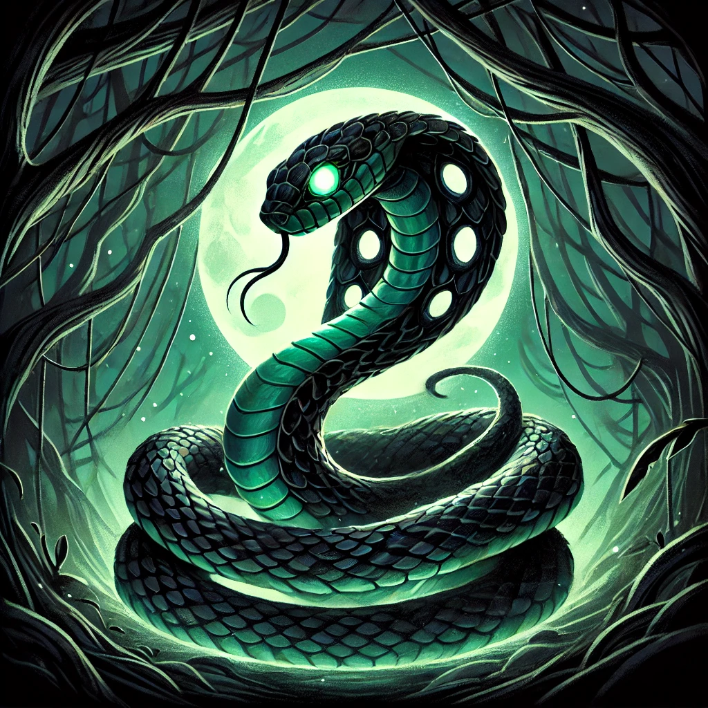

Les Cartes et leurs Effets
Cartes Esprit
Esprit du Feu
Permet d’infliger 3 points de dégâts à un adversaire en retirant 3 points d'Harmonie.
Esprit de l’Eau
Guérit les effets négatifs ou permet de piocher une carte supplémentaire, tout en gagnant 2 points d'Harmonie.
Esprit de la Terre
Crée une protection qui empêche les attaques pour un tour, permettant de gagner 2 points d'Harmonie si la protection reste active.
Esprit du Vent
Réorganise jusqu’à 3 cartes de la main de votre adversaire. Gagnez 1 point d'Harmonie si cela perturbe un rituel ou une combinaison.
Esprit de l’Ombre
Permet de voler une carte d’un adversaire au hasard et de gagner 3 points d'Harmonie pour chaque carte volée.
Esprit de la Lumière
Révèle toutes les cartes dans la main d'un adversaire et gagnez 1 point d'Harmonie pour chaque Esprit révélé (maximum 3 points).
Cartes Élément
Feu
Inflige 2 points de dégâts à un adversaire, retirant ainsi 2 points d'Harmonie.
Eau
Guérit un effet négatif ou permet de piocher une carte supplémentaire, en gagnant 1 point d'Harmonie.
Terre
Crée une protection autour du joueur. Si aucune attaque n'est reçue, gagnez 1 point d'Harmonie.
Vent
Réorganise la main de l'adversaire. Retirez 1 point d'Harmonie si cela perturbe un combo ou une stratégie.
Foudre
Inflige immédiatement 2 points de dégâts, retirant 2 points d'Harmonie à l'adversaire.
Glace
Gèle une carte adverse pendant un tour, retirant 1 point d'Harmonie si une attaque est empêchée.
Éther
Révèle des informations cachées et permet de gagner 1 point d'Harmonie.
Cartes Animal Totem
Loup
Attaque un adversaire et retire 2 points d'Harmonie.
Aigle
Espionne la main d’un adversaire. Si une carte clé est identifiée, gagnez 1 point d'Harmonie.
Ours
Offre une protection contre une attaque prochaine. Gagnez 1 point d'Harmonie si l'attaque est bloquée.
Serpent
Inflige un effet de poison, retirant 1 point d'Harmonie à un adversaire chaque tour.
Renard
Échange une carte avec un adversaire, retirant 1 point d'Harmonie si la carte échangée est stratégique.
Cerf
Soigne 2 points d'Harmonie ou retire un effet négatif.
Cartes Action
Invocation
Permet d’invoquer un Esprit ou un Animal Totem immédiatement, en gagnant 1 point d'Harmonie pour chaque invocation réussie.
Purification
Annule une attaque ou un effet négatif. Gagnez 1 point d'Harmonie si l'attaque est contrée.
Attaque Spirituelle
Inflige 2 points de dégâts à un adversaire, retirant 2 points d'Harmonie.
Rituel de Puissance
Double les effets d’un Esprit ou d’un Animal Totem pour un tour, augmentant potentiellement les points d'Harmonie gagnés.
Protection Totémique
Empêche un joueur de vous attaquer pour un tour, tout en vous faisant gagner 1 point d'Harmonie.
Communion avec les Esprits
Piochez 2 cartes supplémentaires et gagnez 1 point d'Harmonie.
Rejet des Ombres
Force un adversaire à défausser une carte, retirant 1 point d'Harmonie à cet adversaire.